Stone houses have both enduring and endearing qualities about them. Enter one and an immediate and palpable aura of timelessness becomes apparent, and makes all other forms of consturction seem fragile in comparison Building with materials as old as nature also makes a home seem as if it were part of the story of the land. A monument to your family.
The method of stone masonry we use is called slipforming. Short fortes, up to two feet tall, are placed on both sides of the wall to serve as a guide for the stonework. You fill the forms with stone and concrete, then "slip" the forms up for the next level. Slipforming makes stonework easy, even for the novice.
Slipforming is an old-fashioned style of masonry, resulting in a random or "rubblestone" appearance, without the uniform joints or sharp, clean lines of most modern masonry. In fact, slipforming is comparatively messy, and you will often find cement drips permanently adhered to the face of the rocks when you remove the forms. Rut these stains also contribute to the "patina" of the stonework, giving it an antiqued appearance. We rarely remove the drips, even when we can.
Slipforming combines stone masonry and concrete work to form a wall that shares the attributes of both. The walls have the beauty and strength of stone with the reinforcement of concrete and steel. The final product is long-lasting, low maintenance, and virtually weather- and fireproof.
The literature available when we started building showed walls that were stone outside and concrete inside (the letters A through H mentioned in this article refer to illustrations on pages 62 and 63). These had frame walls built against the concrete for holding the insulation and attaching the plasterboard (A). This combination always seemed inefficient to us, partly because of the duplication of the structural wall, but also because the studs are conductive gaps in the insulation. We have avoided the need for the interior studs in some projects by using adhesives to glue rigid insulation and plasterboard directly to the concrete (B). (The wiring and plumbing is routered into the insulation.)
We also like our homes to feel as natural on the inside as on the outside, so we always build some walls with stone inside and out, with rigid insulation in the core. To do this we form both walls at the same time and push short pieces of rebar horizontally through the insulation to tie the walls together (C). In our home, some of the stone walls are completely inside the house, positioned to support the log upper story while being protected from the weather by the greenhouse in front. These walls have no insulation in them, and are simply formed with stone on both sides and concrete in the core (D). (Wiring and plumbing can be placed in this type of wall, but I do not recommend it for the beginner.)
The width of each wall in the drawings is determined by the amount of room needed for the stone and concrete and by the size of the dimensional lumber used for framing in the doors and windows. A 2 x 10, for instance is really 9 1/4 inches wide, so we make the walls that width and screw the slipforms directly onto the faces of the window or door frames.
For the next generation in slipform technology we plan to utilize 6-inch-thick sheets of white polystyrene headboard insulation with 1 x 2 furring strips embedded in one face for attaching plasterboard (E). We will cut out all the doors and windows and stand up the 4-by-8-foot sheets, boxing in the whole house with the insulation. This insulation will serve as the form inside the house, thereby eliminating the need for half of the slipforms and half of the form-setting work. This will also insure straight, plumb walls from the beginning.
The footings for stone walls are much like those in conventional construction, just bigger. For most stonework I recommend framing the footings with 2 x 10s. Make the footings wide as the walls, plus enough extra width to set the forms for the first layer of slipforming. Most importantly, use lots of steel reinforcing-at least three runs of 1/2-inch rebar in a footing 18 inches wide, preferably more. Footings of this size will be sufficient for stone walls up to about 12 feet tall. For higher walls you should consult an engineer. You should also consult an engineer if you are building on soils that seem perennially damp, contain significant amounts of sand or soft clay, or otherwise seem like there may be a potential for shifting.
The "experts" say the footings should be placed below frost line (4 to 5 feet deep in Montana), but contractors are building conventional homes here with footings only 2 1/2 feet down, for what reason I still don't know. In any case, there are several ways to minimize your costs, so you are not building and burying in the ground four feet of perfectly good wall. One method is to design a house with a half basement, so you are utilizing the full height of the foundation wall. Another method is to build a shallow footing and insulate the ground outward from the house to raise the frost line above the footing. A third method is to pour the footings as part of a "floating slab" on a thick pad of gravel, so the house "floats" above any frost heaves.
Specific information on designing and building footings is beyond the scope of this article but is available in many ordinary construction books. However, the final step to prepare for a stone wall is to place anchors in the fresh concrete to tie the footings and future walls together. An easy way to do this is to jab lengths of rebar down through the footing every two feet along the walls, except in the doorways. This way the vertical rebar work is completely done for the walls, and you will not forget it later.
Slipforms are easy to make. Simply screw 2-by-8-foot pieces of 1/2-inch plywood onto 2 x 4 frames. The plywood should be painted with used motor oil or a commercial form oil to keep the concrete from adhering to the wood. Slipforms are a multipurpose tool. We use them for scaffolding material, and one time we bolted all of them together to make a temporary storage shed for the winter.
To set the slipforms, start by snapping a chalk line on the footings for a guide and position the forms along the walls, inside and out; then nail them together end to end. Preferably, the studs on the back of the forms should line up between the inside and outside sets. Now make some temporary spacers from scraps of wood, such as 2 x 2s. These should be cut to fit the width of the wall, and dropped in between the forms to hold the bottoms apart (F). Spacers for de top of the forms are made similarly, but should be nailed onto a thinner piece of wood, like plywood or 1 x 2, and placed across the tops of the forms. The 2 x 2 spacers hold the forms apart, while the longer 1 x 2s are nailed to the tops of the forms to tie the forms together (G). This eliminates the need for a wire tie near the top of the forms. To tie the bottoms together, simply drill holes on both sides of the studs through the back of the forms. Purchase a roil of tie wire at the hardware store, and feed the wire through the forms, wrapping around the studs, and twist the wire ends together outside the forms. Place a nail between the wires, and twist the wires together to pull the forms snug against the wooden spacers (H). There should be a top and bottom spacer, and a wire tie for each stud on the back of the forms.
It is crucial to get the first form setting straight and plumb. Fortunately the slipforms almost level themselves as you tighten the wire ties. A little bump here and there and a few shims are all that is usually needed to straighten and level the forms.
Reinforcing bar, or rebar, as it is commonly called, is simply a steel rod embedded in the concrete to tie all the masonry work together. Rebar helps protect your masonry work from cracking or breaking apart if the ground shifts under your house. A small amount of shifting may occur from the weight of the house settling into the ground, but the greatest shifting is caused by earthquakes. Earthquakes put severe strains on a building as the earth rocks back and forth, and the structure aboveground builds inertia in one direction, then gets yanked back in the other direction. Houses built into the earth are affected less because they tend to move with the quakes.
People flee from California each time a major earthquake occurs, but that state is actually one of the safer places to experience a quake. Major quakes near metropolitan areas in California result in surprisingly few fatalities due to the strict construction standards. Quakes of similar magnitude in third-world countries may kill thousands of people because their mud, rock, or masonry houses have no reinforcing bar to hold them together.
People outside of California are overly complacent about construction standards. Although most of the nation may not experience as much seismic activity, all parts of the country are periodically subject to major quakes. It is important to use lots of rebar in your stone walls no matter where you live.
As noted in the section on footings, we start with vertical lengths of 1/2-inch rebar spaced about every two feet along the wall. We bend these up around the window frames as we come to them, so there is comparatively more reinforcement at these points.
We lay a length of rebar horizontally about every foot up the walls. This is especially important at the corners, and the rebar should be bent at these points, extending for three or more feet in each direction.
Reinforcing bar is remarkably cheap, costing only about three dollars for a 20-foot length of 1/2-inch diameter rod, but it still adds up when you buy a lot of it. Fortunately you can use about any reasonably clean, skinny piece of steel for rebar. We tied together all the walls in our house above the door and window frames with 40-foot lengths of one-inch diameter steel cables we found. Our walls and footings are full of all sorts of other cables, steel fence posts, and barbed wire. You may find that masonry work can be a constructive way to clean up your neighborhood!
Rocks can be purchased at almost any brickyard, but it is much better to get your own if you have a source. Brickyard rocks are expensive, partly because they are usually transported hundreds of miles from a quarry, but also because the rocks are selected for freehand masonry, with similar thicknesses and flat, bricklike platforms all the way around. Slipform masonry is much more forgiving than freehand work, and you can easily save $100 to $200 per hour of effort by driving around the countryside picking up almost any rocks you can find. Just be careful not to overload your vehicle. As a loose rule of thumb, a load of rocks a foot deep in a pickup bed is a cubic yard, weighing approximately 2,000 pounds!
The rocks should be solid and not fractured or crumbly. There should be at least one good, flat face to place against the form. Avoid those tempting thin stones that are only an inch or two thick These may ultimately pop off the wall, leaving an ugly patch of concrete exposed. The rocks should have an average thickness about two-thirds the width of the wall you are forming, but can vary from 3 1/2 to 7 inches in a wall 9 1/4 inches wide. Do not use rocks that are as thick as the walls; the concrete backing is an essential part of the slipforming system.
Farms are often good sources of stone. Farmers pick rocks out of the fields and place them conveniently in a pile, ready to load. Usually they will let you have the piles as they have no use for them. We picked most of our rocks in the mountains within a mile of our house, but we also gathered river rocks for around the hot tub, and we brought back a few special rocks from picnics. The house in these photos (25 by 40 feet outside dimensions) was built with rocks we gathered at an abandoned quarry. There are 16 truckloads in it, and probably twice that in our own home.
Cement work is always fun because you get to create rock. Cement is made from limestone or chalk, plus shale or clay, powdered and baked in a kiln. Water is chemically bound into the parent materials, and the high heat is required to break the molecular bonds. This type of cement is called Portland Type I & II, and that is what you should ask for at the brickyard.
Adding water to cement powder activates a chemical reaction to bind the cement dust back into rock. Most of the chemical reaction occurs within the first few days, but cement continues to cure noticeably for a month, and becomes still harder for years to come. To allow the chemistry to work properly it is important to keep cement work from drying out in the first day or two. Fresh masonry can be sprayed with water or covered with tarps or blankets in extremely hot, dry weather to keep it from drying out too fast.
Sand and gravel is added to cement to make concrete. The different-sized particles interlock with one another, creating a stronger bond-much as if you interlocked the fingers of both hands to keep someone from pulling them apart. Look in the yellow pages for a source of sand and gravel. The gravel used in concrete is usually a 3/4-inch mesh, meaning that it is run through a screen with holes of that size. I prefer pea gravel (3/8-inch mesh) because it flows better between the stones, but it is sometimes more expensive than regular concrete gravel. You can use either washed or masonry sand to go with the concrete. Masonry sand is finer, and usually more expensive, but is nicer for finish work. In our area sand and gravel costs about $5.50 per yard and up, plus about $6 per yard for shipping (50 miles). We order a full truckload of each at a time (10 to 15 yards). Slipformed walls are composed of approximately equal portions of concrete and stone work.
A power cement mixer is a must for sfipform work, and you can get a good used one for less than $200. We make a concrete mix of one part cement to three parts sand and three parts gravel. That works out to approximately two coffee cans of cement plus one five-gallon bucket of sand and one of gravel.
Start the first row by laying out a bed of concrete one to two inches thick, and place your biggest rocks into it. Otherwise, for maximum efficiency I recommend laying in as much stone as you possibly can in all the forms. You will often be able to stack the stones several deep before filling in with concrete. Just make sure there is room to work the mortar in around each and every rock. Also work toward a "brick layered" effect, by bridging the joints between the rocks on every level. Place as many rocks as you can and then start mixing cement.
Make the first batch of concrete by mixing the ingredients dry, then add the water. Ideally the mix should be gooey enough to slide in around each stone, but not so soupy that it runs out through the joints and down the rock faces.
Measure the amount of water used in this first batch, then pour the same amount of water in the mixer to clean it. Save this water and add the gravel, cement, and sand-in that order-to the water to mix subsequent batches. Adding the sand last allows it to work down into the spaces between the gravel, instead of clumping up in the back.
You must wear rubber gloves to protect your hands from the cement. Rubber gloves are also useful for working the mortar between the rocks. We use coffee cans to bucket the concrete from the wheelbarrow into the walls, then plunge our gloved hands down into the wall to vibrate the concrete in between the rocks. Pour concrete to the top of your stonework, then place a new row of rocks on the fresh mortar and continue stacking as before.
It is okay if some of the rocks stick up above the forms, but tilt them back at least a quarter inch, otherwise they tend to bulge out the forms on the next level.
At the end of a day you should cover masonry work with blankets or cement sacks, especially in hot, dry, or freezing weather. And always soak old masonry work with a hose before you start adding to it again. Otherwise the dry mortar absorbs the moisture out of the new material before it properly cures.
The simplest way to move the forms up the wall is to set new forms on top of the previous layer. However, it is usually more desirable to pull off the old forms and chip away any globs of concrete on the rock faces before they become too hard. Move the forms up and hold them in place with stilts. The stilts may be merely propped underneath, or screwed onto the sides of the forms. The forms are wobbly at first, until you clamp them tight against the walls with the wire ties.
It is easier to move the forms up the wall in places where the door and window frames are already in place. Just hoist the forms up to the right height and screw them into the frames. You do not need wire ties or spacers at these points.
There are many ways to save money and recycle old resources while building your home, but you should be very careful about reusing windows and doors. We tend to think, for example, that it is economically and environmentally sensible to salvage windows and reuse them. But the cost and energy expended to manufacture a new window is trifling compared to the amount and cost of the energy that will leak through the glass over its lifetime. Often the most sound course of action is to discard the old windows, especially singlepanes, and replace them with double- or triple-glazed units.
Granted, there are always trade-offs, especially when you are paying cash-as-you-go. Sometimes it is more expedient to install old windows, and to simply accept higher fuel bills in the future. We installed used double-glazed sliding glass door panes in our greenhouse because they were virtually free, and we were building our house almost without money anyway. Our house is reasonably efficient with these windows, but in order to eventually achieve 100 percent passive solar heating we will have to replace these units with the new triple-glazed, low-E, Krypton gas windows coming on the market.
If you do install used windows and doors then you should at least make sure that the sizes are interchangeable with those on the market today. Otherwise, having the new windows custom-made to fit odd-sized openings will at least double your costs when you do decide to upgrade.
For installing new windows you should pick them out before you begin construction and build the frames according to the "rough size" specified for each unit. You may also want to build the frames extra large to insulate across the thermal gap that occurs through the stonework (I). We add three inches in width and height to the frames to leave room inside for rigid insulation and plasterboard. We nail in 2 x 4s at the outside edge to attach the windows (J). In our next project we will have the window frames custom-cut from a highdensity polystyrene beadboard to eliminate both the thermal leak and the wood framing (K). We will use windows that can be glued in place rather than nailed.
Build the window and door frames on the ground, and put braces across the corners to keep them squared. Drill in screws partway all around the frames to anchor the wood to the concrete. Large frames should be temporarily braced inside so they do not bow inward from the sides or top while you are doing stonework.
The door frames are often installed directly on the footings, and you should leave a gap in the forms through at least one doorway. so you can go in and out with a wheelbarrow. For symmetry we usually align the tops of the windows with the tops of the doors, even if the windows are of multiple sizes. Measure down from the top of a door frame to find the starting point to install the windows. Mark this with a level and a pencil on the inside of the forms. Sometimes the hardest part is remembering to stop putting stones in before you rock in the whole opening!
The stonework should end one or two inches below the windows. Then lay in a thick bed of mortar and drop the window frame into the forms, tapping it into the mortar. Check with a level in all directions, and recheck it as you work, until the end of the day. Keep in mind that both your successes and your mistakes will be permanently "cast in stone."
Window and door frames up to about four feet wide can be spanned with stone by laying out multiple lengths of 1/2-inch rebar in a bed of mortar one-inch deep across the tops of the frames. Cover the rebar with more concrete, then add the stones. Longer spans may be accomplished using 6-inch rebar.
The form setting at the top of the wall must be very level. Fill the forms with stonework, but stop one to two inches below the top. Cap the top of the wall with a thick bed of mortar, but be careful to keep the mortar back from the outside edge so it does not run down the stonework. Trowel the mortar smooth with the tops of the walls, then tap anchor bolts down into the fresh masonry, about every four feet along the walls. Attach a "sill plate" to the anchor bolts when the masonry is cured, and attach the roof system to the sill plate.
The gable ends are easy to fill in with stone, once the rafters or trusses are in place. just make sure you line up the rafters so that one set will get concreted into each gable, preferably along the inside edges of the walls (L). Then continue with the slipforming, using the rafters as a guide inside the forms. You will need to stop at the rafter bottoms, then pull the forms off, and construct the floating rafters (M) with supports resting on the stonework Now finish the remaining stonework between the supports (N). This will be freehand work, without the use of forms.
Please note, when you are building an insulated double wall, the inside wall should stop short enough to allow a continuous line of insulation from the wall into the roof.
The stonework is not quite finished when you pull the forms off the wall. You will see gaps of all different sizes between the stones, and globs of concrete loosely stuck to the face of the wall. The concrete is naturally lumpy anyway, so you need to trowel a finer mortar over it between the stones. This is called grouting or pointing the wall.
Grouting the wall fills all the little spaces; it makes the rock work stronger and protects the wall from the weather. First, however, you need to use a hammer, a chisel, or a rock pick to chip away the concrete on the wall face. Also chip the concrete back an inch or so in between the rocks; this will make enough space for the grouting mortar. Obviously it is best to chip away the concrete within a day or two of pouring it, before it becomes hard. Just be gentle around the stones. A bad hit can easily loosen a rock.
Grouting does not need to be done right away, but it is good to do it while you still have momentum on the project. Besides, grouting brings out the beauty in your stonework. It is the masonry equivalent of framing a picture.
We have tried many different mixes for grouting work, and we now prefer a mix of one part lime to two parts cement (Type I & II) and eight parts masonry sand. We measure this with coffee cans and mix it in the wheelbarrow with a hoe. The mortar should be moist enough to work easily into the wall, without being so wet that it sags in the joints or smears all over the rock faces. Hose down the wall before you start grouting, so the old concrete does not suck the moisture out of the fresh grout.
Additional tools you will need for grouting are a mortar board and small trowels. A mortar board can be made by attaching any kind of a handle to the middle of a 12-inch-square piece of 1/2 inch plywood. Hold the board from underneath and pile the mortar on top. Then place the edge of the board against the wall where you are working, and shove the mortar directly off the board into the mortar joints around the stones. There are many sizes of grouting or pointing trowels commercially available, but my favorite tool is still a cheap, flexible putty knife, about 1 1/4 inches wide.
It may seem odd to use such a wide trowel when so many of the mortar joints are less than an inch wide, but there are also wider joints, and this one tool works for them all. We fill the joints with cement, then press the trowels back in at an angle along the edges of the rocks; this highlights the individual stones while bulging out the center of the mortar joints. Of course there are many styles of grouting, and you should practice on an out-of-the-way part of the wall until you find a technique you like.
Grouting can be excruciatingly slow, but it is a process I have learned to enjoy. Too often we rush, rush, rush from one project to another, but grouting cannot be rushed. You may spend an entire day grouting an 8-by-10-foot section of wall, but it is meditative work. You will have time to reflect on your dreams and how to continue achieving them in the most effortless ways. You may ultimately save more time on all your other projects than you actually spent staring at the wall doing the grouting! Then, at the end of the day, you may step back and blink, realizing that your castle walls are finished, and it really did not take all that long after all!
Thomas and Renee Elpel own and operate Hollowtop Outdoor Primitive School in Pony, Montana. The school conducts seminars on stone masonry and other alternative construction techniques as well as classes on primitive living skills. For more information about the school, write them care of HOPS, Box 691, Pony, MT 59747-0691.
|
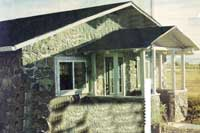 Tom hefts a pebble during construction. |
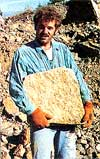 Foundation set and rebar in place. |
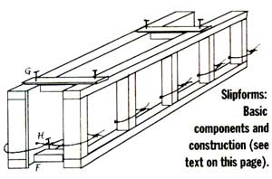 Slipforms set for the first pour. |
|
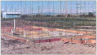 These extra-large stones were positioned in the dining room wall before the formswent on to avoid hefting them in from above. |
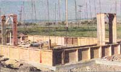 Close-up of the form. |
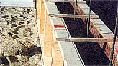 Gaps between the stones are filled in at the end of the process. |
|
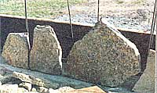 A beautiful storm approaches as the form ""slips"" up the nearly complete walls. |
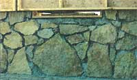 Setting forms for the level. Renee drills screws partway into the top of the window frame to anchor the wood in the concrete. |
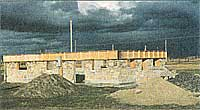 The Elpels propped the floating rafters up with 2 x 4s until the supports were securely anchored in the wall. |
|
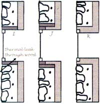 |
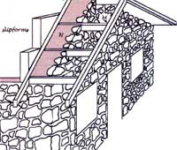 |
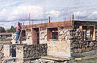 |
|
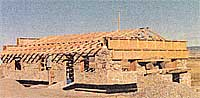 |
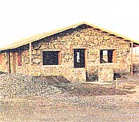 |
|